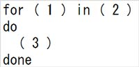
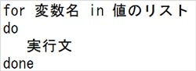
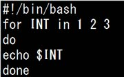
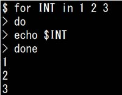
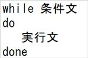
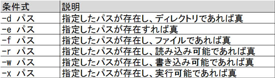
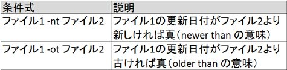
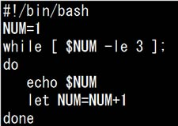

- 問題ID : 15555 シェルスクリプト
- 履歴
下図はシェルスクリプトにおいて繰り返し処理を行う場合に使用するfor文の書式です。( )内に記述する内容として適切なものは次のうちどれか。

正解
(1)変数名 (2)値のリスト (3)実行文
解説
for文の書式は以下の通りです。

for文は、指定された「値のリスト」を「変数名」に1つずつ格納していき、その度にdo ～ doneの間の「実行文」を処理します。
したがって正解は
・(1)変数名 (2)値のリスト (3)実行文
です。
以下はfor文を使用したシェルスクリプト（for.sh）の例です。

以下のように処理が実行されます。
1.変数 INT に 1 が格納され、実行文 echo $INT が実行される（1が表示される）
2.変数 INT に 2 が格納され、実行文 echo $INT が実行される（2が表示される）
3.変数 INT に 3 が格納され、実行文 echo $INT が実行される（3が表示される）
以下は実行結果です。
$ ./for.sh
1
2
3
なお、for文は以下の様にコマンドラインからも使用できます。

参考
シェルスクリプトにおいて繰り返し処理を行うにはfor文やwhile文などを使用します。
for文の書式は以下の通りです。
for文は、指定された「値のリスト」を「変数名」に1つずつ格納していき、その度にdo ～ doneの間の「実行文」を処理します。
以下はfor文を使用したシェルスクリプト（for.sh）の例です。
以下のように処理が実行されます。
1.変数 INT に 1 が格納され、実行文 echo $INT が実行される（1が表示される）
2.変数 INT に 2 が格納され、実行文 echo $INT が実行される（2が表示される）
3.変数 INT に 3 が格納され、実行文 echo $INT が実行される（3が表示される）
以下は実行結果です。
$ ./for.sh
1
2
3
while文の書式は以下の通りです。

while文は、条件文に記述されたコマンドの終了ステータスを使用し、繰り返し処理を継続するか終了するかを判定します。条件文が真（0）の場合に繰り返し処理を継続し、条件文が偽（0以外）の時点で繰り返し処理を終了します。
条件文にはtestコマンドを使用します。testコマンドの書式は以下の通りです。
test 条件式
または
[ 条件式 ] ※「[」の後ろと「]」の前にはスペースが必要
test コマンドは条件式の真偽を判断し、その結果を終了ステータスとして返します（真は0、偽は1）。while文の条件文ではtestコマンド以外のコマンド も使用できますが、testコマンドは標準出力に何も表示しないため、while文やif文（条件分岐）などを使用する際に便利です。
以下は主な条件式です。
ファイルに関する主な条件式

数値の比較に関する主な条件式

ファイルの比較に関する主な条件式

文字列の比較に関する主な条件式

条件式は以下のtestコマンドのオプション（演算子）で結合できます。

以下はwhile文を使用したシェルスクリプト（while.sh）の例です。

変数NUMが3以下の場合に、NUMを表示し1をNUMに加算するという処理を繰り返します。条件文にはtestコマンド、変数の演算にはletコマンド（書式：let 変数=式）を使用しています。
以下は実行結果です。
$ ./while.sh
1
2
3